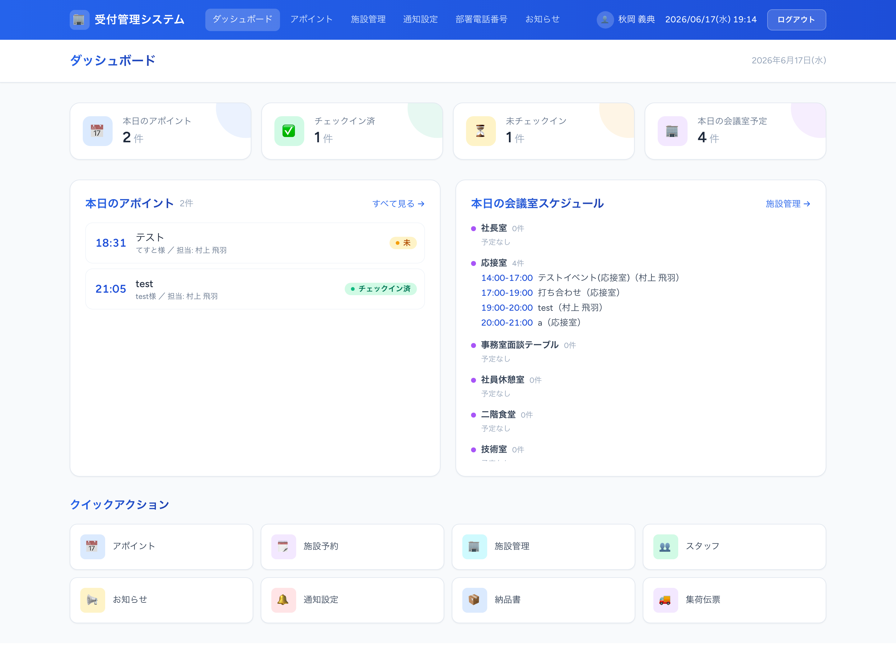
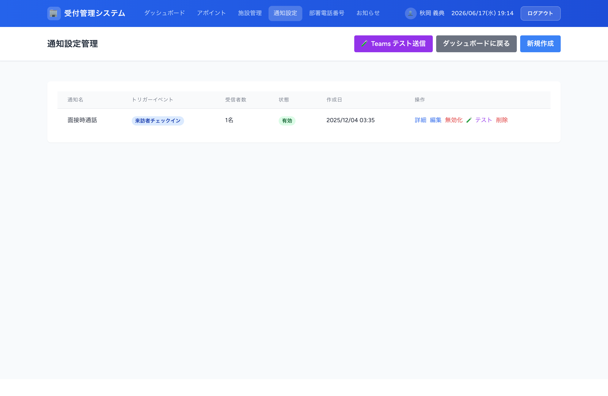
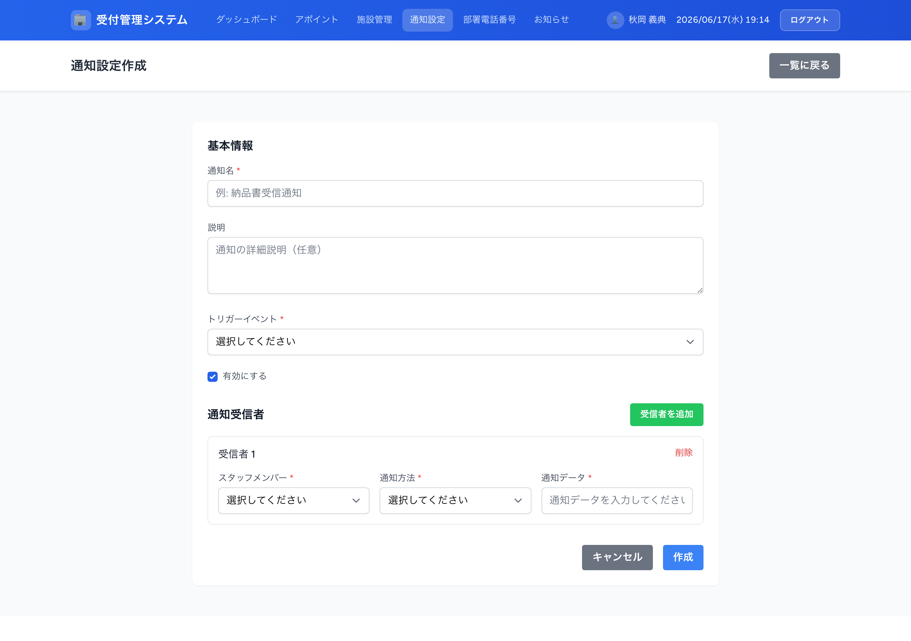
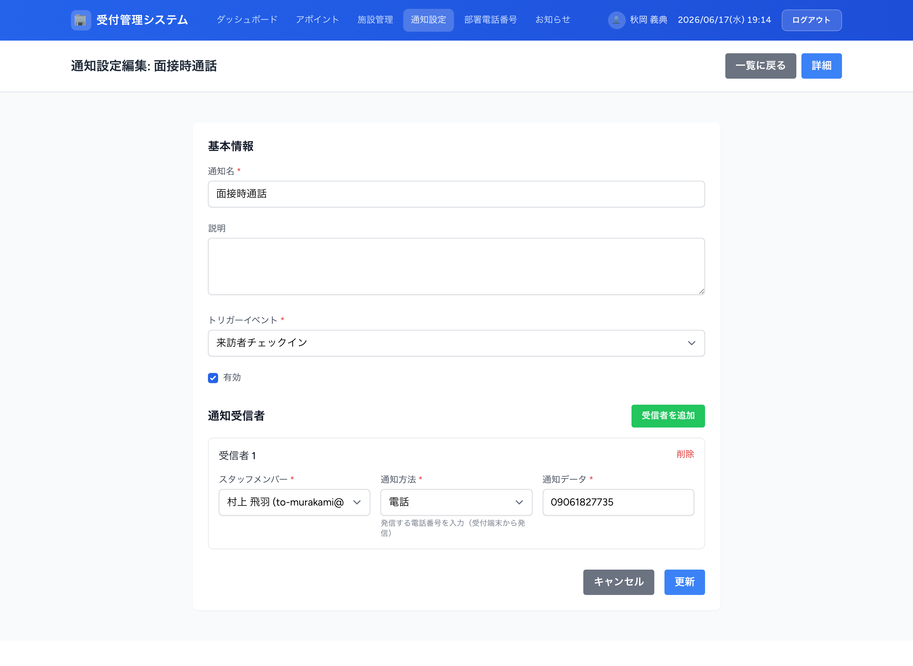
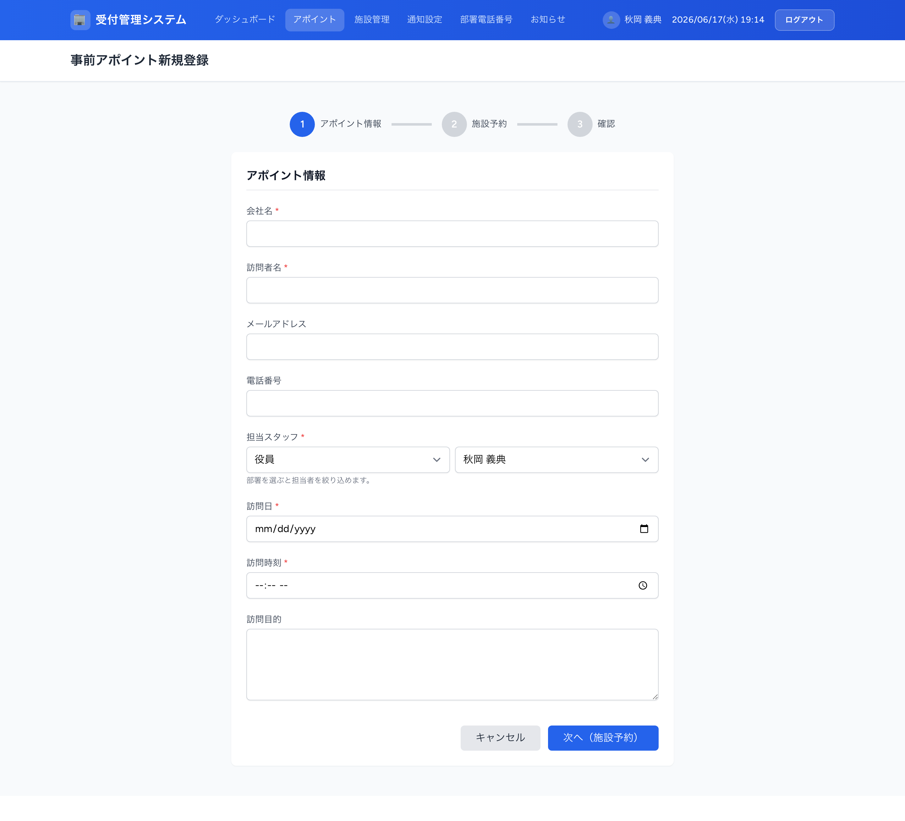
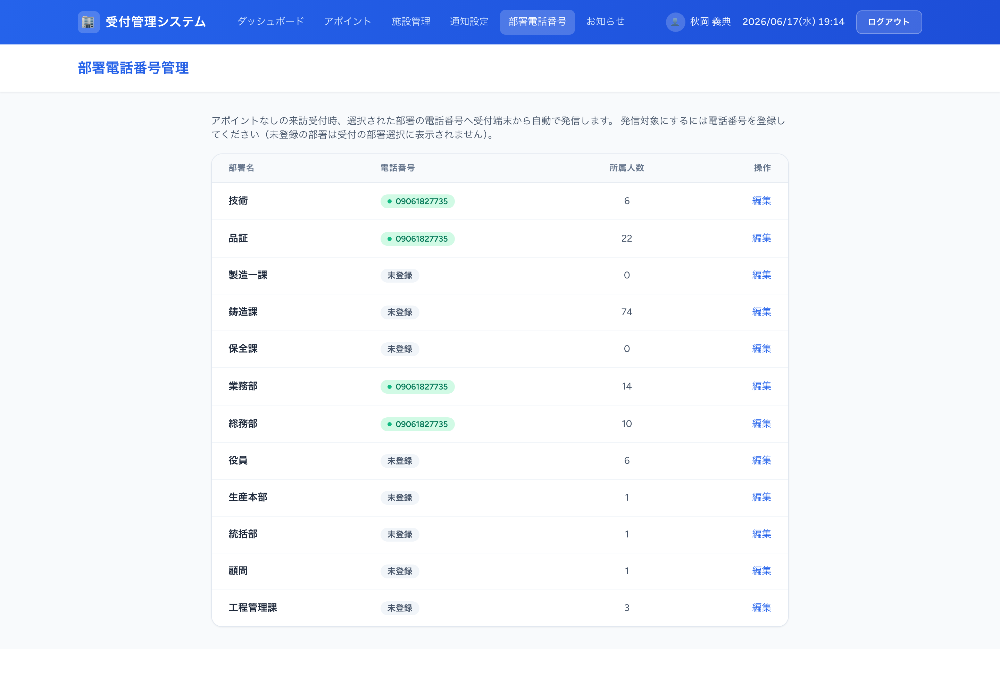
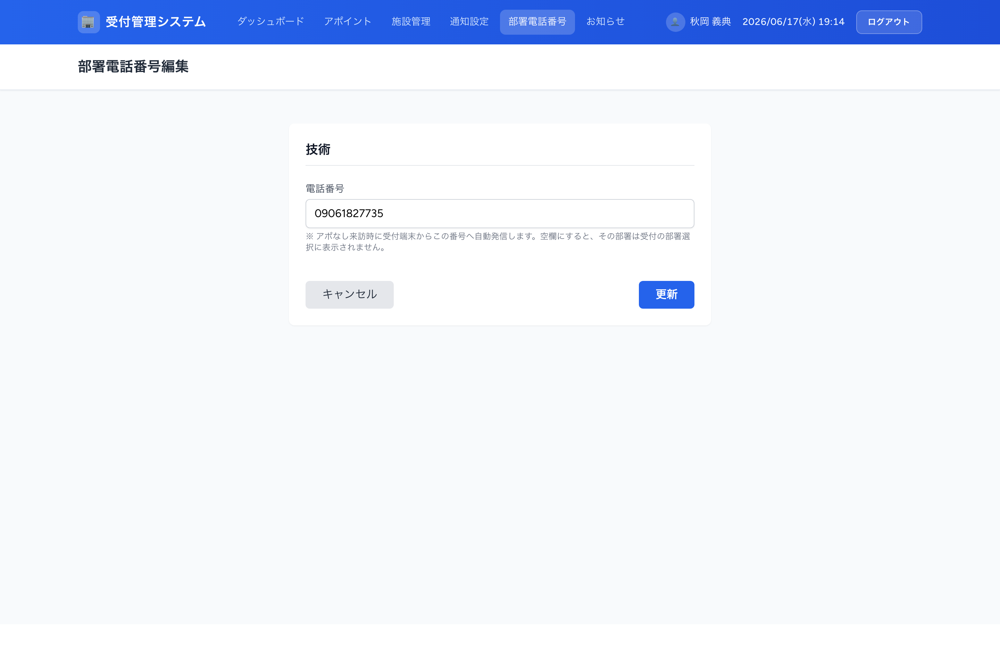

受付管理システム 通知設定 説明書
来訪・納品・面接などの各通知を、誰に・どの方法で届けるかを設定・管理するための手引きです。
1. 通知の全体像
本システムは、受付で発生する各種イベント（来訪・納品・集荷・面接など）をトリガーに、担当者へ自動で通知を送ります。通知は 管理画面の「通知設定」 と 「部署電話番号」 の2か所で管理します。
| 通知 | トリガー | 通知方法 | 宛先の決まり方 |
|---|---|---|---|
| 来訪者チェックイン（アポあり） | QR／受付番号でチェックイン | Teams | 担当スタッフ＋施設予約の参加メンバー |
| 来訪者到着（アポなし） | 部署を選択して受付 | Teams電話 | 選択した部署の全員＋部署代表電話 |
| 納品書・受領書受信 | 画像保存 | Teams | 通知設定の受信者 |
| 集荷伝票受信 | 画像保存 | Teams | 通知設定の受信者 |
| 面接来訪者到着 | 「担当者を呼ぶ」ボタン | Teams電話 | 通知設定の受信者 |
| アポイント確認メール | 管理画面でアポ登録時 | メール | 来訪者のメールアドレス |

2. 通知の種類と方法
通知の「方法（タイプ）」は3種類です。それぞれ役割がはっきり分かれており、「通知データ」欄に入力する内容も異なります。
| 通知方法 | 役割 | 「通知データ」に入れるもの |
|---|---|---|
| Teams | Teamsチャネルへメンション付き投稿 | メンションしたい相手のメールアドレス |
| メール | 実際にメールを送信 | メールの送信先アドレス |
| 電話 | 受付端末から電話発信（Twilio） | 発信する電話番号 |
納品書・受領書受信 ／ 集荷伝票受信 ／ 面接時通話 ／ 来訪者チェックイン ／ アポイントリマインダー
3. 通知設定の管理画面
メニューの 通知設定（/admin/notification-settings）で、各通知の宛先を一覧・追加・編集できます。

3-1. 新規作成の手順
右上の 「新規作成」 から、通知名・トリガー・受信者を登録します。
- 通知名と説明（任意）を入力します。
- トリガーイベントを選びます（例：来訪者チェックイン）。
- 有効にするにチェックが入っていることを確認します。
- 通知受信者でスタッフを選び、通知方法（Teams／メール／電話）を選択します。
- 選んだ方法に応じて通知データ（メールアドレスや電話番号）を入力します。入力欄の下にヒントが表示されます。
- 複数人へ送る場合は「受信者を追加」で行を増やし、最後に「作成」を押します。

・Teams：メンションする相手のメールアドレス（@username ではなくメール推奨）
・メール：送信先メールアドレス（ここに実際にメールが届きます）
・電話：発信先の電話番号
3-2. 編集・有効/無効・テスト送信
一覧の「編集」から受信者の追加・変更・削除ができます。設定を一時的に止めたいときは「無効化」、配信内容を確認したいときは「テスト」を使います。

4. 受付完了通知と「参加メンバー」
アポありの来訪者がチェックインすると、Teams で担当者へメンション通知が飛びます。今回の改修で、担当スタッフに加えて「同席する参加メンバー」全員にもメンションが届くようになりました。
アポイント登録時に会議室（施設）予約を行い、その予約の「参加者」に同席者を選んでおくと、その全員がチェックイン通知のメンション対象になります。会議室予約を行わなかったアポイントは、従来どおり担当スタッフのみに通知されます。
つまり、参加メンバーへも通知したい場合は アポイント登録時に施設予約を付け、参加者を選ぶ だけで設定完了です。通知設定画面での追加作業は不要です。
5. アポイント登録時のメール送信（デフォルトON）
管理画面からアポイントを登録すると、来訪者へ受付番号・QRコード入りの確認メールを送れます。今回の改修で メール送信は初期状態でON になりました。
- メニュー「アポイント」→「新規登録」でアポイント情報を入力します（メールアドレスを入れると送信対象になります）。
- 施設予約・確認ステップを進め、最後に登録するとメール送信確認ダイアログが表示されます。
- そのまま「メール送信」を押せば送信。送りたくない場合のみ「送信しない」を選びます。

6. 部署電話番号（アポなし来訪の電話通知）
アポイントなしの来訪者が受付で部署を選ぶと、Teams 通知に加えて受付端末からその部署の代表電話へ自動で発信します。発信先となる電話番号は、新設の 部署電話番号（/admin/departments）で管理します。

- メニュー「部署電話番号」を開き、設定したい部署の「編集」を押します。
- 代表電話番号を入力して「更新」を押します。

+・-・空白で入力します（例：090-1234-5678）。7. 運用上の注意
| 項目 | 内容 |
|---|---|
| 電話発信の仕組み | 電話は受付端末（ブラウザ）から Twilio で発信します。サーバーからの自動発信は行いません。発信させるには受付画面が開いている必要があります。 |
| Teams 通知 | Teams への投稿は Webhook 経由です。メンションは「通知データ」に入れたメールアドレスで行われます。社内で使っているアドレスを正確に入力してください。 |
| メール送信 | 「メール」タイプの通知、およびアポイント確認メールは実際に送信されます。テスト時は送信先にご注意ください。 |
| 設定を止めたいとき | 通知設定一覧の「無効化」で、設定を消さずに一時停止できます。 |
| 動作確認 | Teams への配信内容は各設定の「テスト」ボタンで確認できます。実際のメンション挙動（担当＋参加メンバー）は実チェックインでの確認が必要です。 |